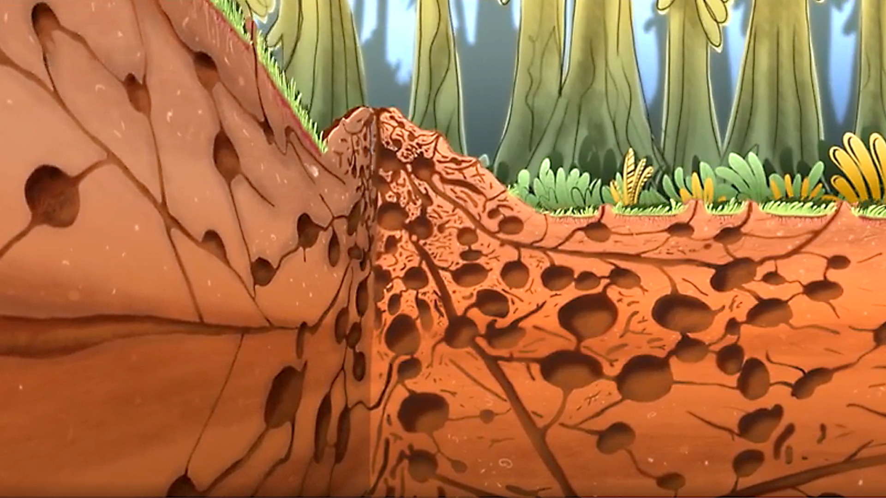
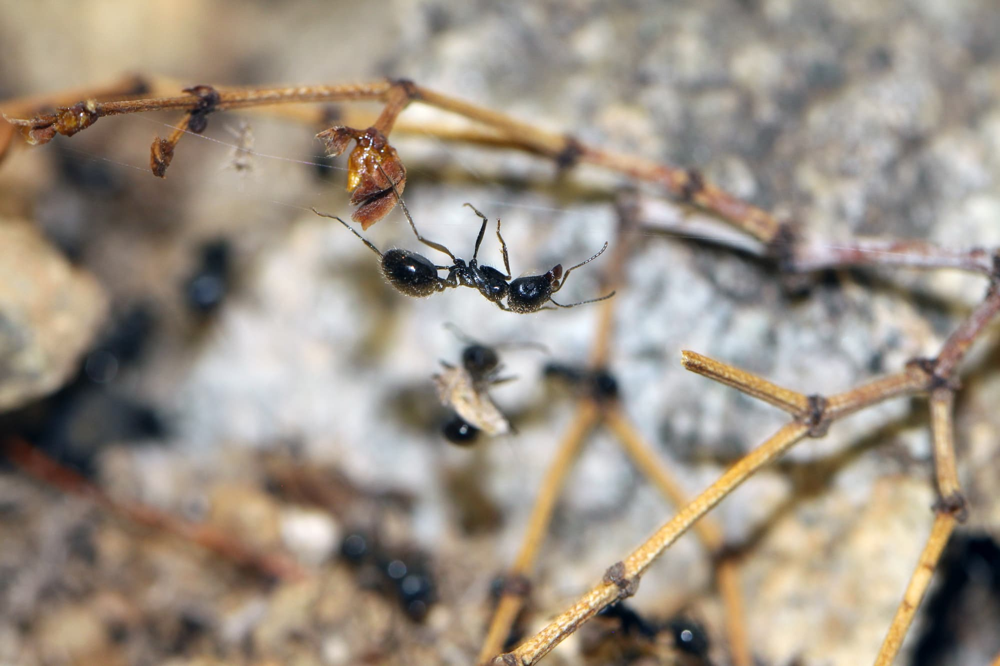

Ameisen sind Insekten, die in Staaten zusammenleben. Als Allesfresser fressen sie auch andere Insekten und Spinnen. Weltweit gibt es über 10.000 Arten, 200 davon bei uns in Europa. Die bei uns bekannteste Ameisenart ist die Rote Waldameise. Sie ist einen halben bis einen ganzen Zentimeter groß. Wie alle Insekten haben auch Ameisen sechs Beine, einen harten Panzer und einen dreiteiligen Körper aus Kopf, Brust und Hinterleib. Ameisen können unterschiedliche Farben haben: rötlich-braun, schwarz oder auch gelblich. Die beiden „geknickten“ Fühler am Kopf nennt man auch Antennen. Damit orientieren sie sich, weil sie mit den Antennen tasten, riechen und schmecken können.
Ameisenstaat

Zu einem Ameisenstaat gehören ein paar hundert Ameisen oder auch mehrere Millionen. Fast alle Ameisen in einem Staat sind Weibchen: Arbeiterinnen und Königinnen. Die Männchen sind nur kurz im Frühling zu sehen. In der Zeit befruchten sie die Weibchen. Danach sterben sie wieder. Arbeiterinnen kümmern sich um den Nachwuchs, um Nahrung, und sie bauen das Ameisennest. Sie werden höchstens zwei oder drei Jahre alt. Königinnen sind oft größer als die anderen Ameisen und können bis zu 25 Jahre alt werden. Nur sie legen die Eier. Aus diesen Eiern entwickeln sich dann die neuen Ameisen. Wird eine Königin geboren, so nennt man sie Jungkönigin. Sie gründen entweder einen neuen Ameisenstaat oder bleiben in ihren Staat, wenn es dort mehrere Königinnen gibt. Staaten mit einer Königin werden nur so alt wie die Königin selbst. Das liegt daran, dass nach ihrem Tod keine Eier mehr gelegt werden. Mit mehreren Königinnen können Ameisenstaaten deutlich älter werden: etwa 50 bis 80 Jahre.
Noones left behind
Eine südkalifornische Ameisenart eilt zu Hilfe, wenn sich Nahrungssammlerinnen in einem Spinnennetz verfangen haben - sehr zur Überraschung von Biologen. Für viele Insekten bedeutet ein Spinnennetz den Tod: Einmal gefangen, können sie sich nicht mehr befreien. Anders Wüstenameisen der Art Veromessor pergandei, die unter anderem in Südkalifornien leben: Sie setzen ein chemisches Alarmsignal frei, wenn sie sich in Spinnenseide verheddert haben.
Daraufhin eilen ihnen andere Ameisen zur Hilfe, retten sie aus dem Netz und päppeln sie wieder auf. Für die Biologen kommt das Verhalten überraschend: Normalerweise kenne man eine solche Strategie nur von Tieren, die in kleineren Gruppen leben und bei denen ein Individuum daher einen höheren Stellenwert hat. Veromessor pergandei kommt hingegen in riesigen Kolonien vor, die jeden Tag zehntausende Ameisen zur Nahrungssuche aussenden. Die Ameisenart lebt vor allem von Pflanzensamen und muss täglich Essen für 650 Jungtiere sammeln, um ihre Population konstant zu halten.

Für die Kolonie lohne es sich daher vermutlich, um das Leben jeder Sammlerin zu kämpfen, heißt es in einer Mitteilung der American Society of Naturalists. Laut Schätzungen von Kwapich und Hölldobler gingen pro Jahr 65 000 Samen verloren, wenn die Ameisen alle in Spinnennetzen gefangenen Schwestern einfach zurückließen. Mit ihrer Rettungsstrategie ist die Art aber offenbar eine Ausnahme: Andere Ameisen legen einfach ihre Versorgungswege um, wenn sie auf einer Route durch ein Spinnennetz gestört werden.
Erfolgsrezept
Ameisen gehören zu den am weitesten verbreiteten und häufigsten Insekten. Einer der Gründe für ihren enormen ökologischen Erfolg ist, daß sie immer in Staaten organisiert sind, die üblicherweise aus einer Königin und Arbeiterinnen bestehen. Während die Königin sich um die Fortpflanzung kümmert, tragen die Arbeiterinnen Futter ein, verteidigen das Nest und füttern die Jungen. Um das Funktionieren und vor allem die Entstehung solcher Insektenstaaten in der Evolution zu verstehen, ist es nötig, die ganze Bandbreite an Staatsformen kennenzulernen.
.jpg)